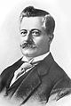
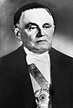

Lista de presidentes do Brasil
Esta lista de presidentes do Brasil compreende todas as pessoas que exerceram a chefia de governo e de Estado no país desde a Proclamação da República, em 15 de novembro de 1889. A lista inclui também aqueles que, tendo sido eleitos, não exerceram o mandato por morte ou impedimento, bem como as duas juntas militares provisórias no regime presidencialista.
As cores indicam o meio pelo qual cada presidente chegou ao cargo, com exceção da cor cinza, que indica os que não conseguiram tomar posse. Em azul estão os presidentes eleitos por sufrágio direto; em verde, os que chegaram à presidência pela linha sucessória (por exemplo, quando um vice-presidente assume o cargo de presidente, ou quando um presidente da Câmara dos Deputados assume a presidência caso não haja um vice-presidente); em amarelo, os eleitos por sufrágio indireto, empossados através de movimento revolucionário ou golpe e juntas militares.
| N° | Presidente | Fotografia | Período do mandato (duração do mandato) |
Partido | Vice-presidente(s) | Referências e notas | Eleição |
|---|---|---|---|---|---|---|---|
(República Velha: República da Espada e República Oligárquica) (15 de novembro de 1889 a 24 de outubro de 1930 – 40 anos, 11 meses e 9 dias) | |||||||
| 1 | Deodoro da Fonseca | 15 de novembro de 1889 – 23 de novembro de 1891 (2 anos e 8 dias) |
nenhum | nenhum | [nota 1] [1] |
Proclamação de 1889 | |
| Floriano Peixoto [nota 2] |
1891 | ||||||
| 2 | Floriano Peixoto | 23 de novembro de 1891 – 15 de novembro de 1894 (2 anos e 357 dias) |
Nenhum | Nenhum | [nota 3] [2] |
– | |
| 3 | Prudente de Morais | 
|
15 de novembro de 1894 – 15 de novembro de 1898 (4 anos) |
PR Federal | Manuel Vitorino | [nota 4] | 1894 |
| 4 | Campos Sales | 15 de novembro de 1898 – 15 de novembro de 1902 (4 anos) |
PRP | Rosa e Silva | [4] | 1898 | |
| 5 | Rodrigues Alves | 
|
15 de novembro de 1902 – 15 de novembro de 1906 (4 anos) |
PRP | Afonso Pena | [nota 6] [5] |
1902 |
| 6 | Afonso Pena | 15 de novembro de 1906 – 14 de junho de 1909 (2 anos e 211 dias) |
PRM | Nilo Peçanha | [nota 7] [6] |
1906 | |
| 7 | Nilo Peçanha | 
|
14 de junho de 1909 – 15 de novembro de 1910 (1 ano e 154 dias) |
PRF | Nenhum | [nota 8] [6] |
– |
| 8 | Hermes da Fonseca | 15 de novembro de 1910 – 15 de novembro de 1914 (4 anos) |
PRC | Venceslau Brás | [7] | 1910 | |
| 9 | Venceslau Brás | 
|
15 de novembro de 1914 – 15 de novembro de 1918 (4 anos) |
PRM | Urbano Santos | [8] | 1914 |
| — | Rodrigues Alves |
|
Eleito diretamente, morreu antes de tomar posse | PRP | Delfim Moreira | [nota 9] [5] |
1918 |
| 10 | Delfim Moreira | .jpg)
|
15 de novembro de 1918 – 28 de julho de 1919 (255 dias) |
PRM | Nenhum | [nota 10] [9] |
– |
| 11 | Epitácio Pessoa |  | 28 de julho de 1919 – 15 de novembro de 1922 (3 anos e 110 dias) |
PRM | Delfim Moreira [nota 11] |
[nota 12] | 1919 |
| Bueno de Paiva [nota 13] | |||||||
| 12 | Artur Bernardes | .jpg)
|
15 de novembro de 1922 – 15 de novembro de 1926 (4 anos) |
PRM | Estácio Coimbra | [10] | 1922 |
| 13 | Washington Luís | .jpg)
|
15 de novembro de 1926 – 24 de outubro de 1930 (3 anos e 343 dias) |
PRP | Fernando de Melo Viana | [nota 14] | 1926 |
| — | Júlio Prestes | .jpg)
|
Eleito diretamente, não assumiu em razão da Revolução de 1930 |
PRP | Vital Soares | [nota 15] | 1930 |
(Governos Provisório e Constitucional) [nota 16] (24 de outubro de 1930 a 10 de novembro 1937 – 7 anos e 17 dias) | |||||||
| — | Junta Governativa Provisória de 1930 | 24 de outubro de 1930 – 3 de novembro de 1930 (10 dias) |
Nenhum | Nenhum | [nota 17] | Revolução de 1930 | |
| 14 | Getúlio Vargas | .jpg)
|
3 de novembro de 1930 – 10 de novembro de 1937 (7 anos e 7 dias) |
Nenhum | Nenhum | [nota 18] | Revolução de 1930 |
| 1934 | |||||||
Terceira República (Estado Novo) (10 de novembro 1937 a 31 de janeiro de 1946 – 8 anos, 2 meses e 21 dias) | |||||||
| 14 | Getúlio Vargas |
|
10 de novembro de 1937 – 29 de outubro de 1945 (7 anos e 353 dias) |
Nenhum | Nenhum | [nota 19] | Golpe de 1937 |
| 15 | José Linhares | 
|
29 de outubro de 1945 – 31 de janeiro de 1946 (94 dias) |
Nenhum | Nenhum | [nota 20] | – |
(República Populista) (31 de janeiro de 1946 a 2 de abril de 1964 – 18 anos, 2 meses e 2 dias) | |||||||
| 16 | Eurico Gaspar Dutra | 31 de janeiro de 1946 – 31 de janeiro de 1951 (5 anos) |
PSD | Nereu Ramos [nota 21] |
[nota 22] [13] |
1945 | |
| 17 | Getúlio Vargas | 
|
31 de janeiro de 1951 – 24 de agosto de 1954 (3 anos e 205 dias) |
PTB | Café Filho | [nota 23] | 1950 |
| 18 | Café Filho | 
|
24 de agosto de 1954 – 8 de novembro de 1955 (1 ano e 76 dias) |
PSP | Nenhum | [nota 24] | – |
| 19 | Carlos Luz | 
|
8 de novembro de 1955 – 11 de novembro de 1955 (3 dias) |
PSD | Nenhum | [nota 25] | – |
| 20 | Nereu Ramos | 
|
11 de novembro de 1955 – 31 de janeiro de 1956 (81 dias) |
PSD | Nenhum | [nota 26] [14][15][16] |
– |
| 21 | Juscelino Kubitschek | 
|
31 de janeiro de 1956 – 31 de janeiro de 1961 (5 anos) |
PSD | João Goulart | [17] | 1955 |
| 22 | Jânio Quadros | 31 de janeiro de 1961 – 25 de agosto de 1961 (206 dias) |
PTN | João Goulart | [nota 27] | 1960 | |
| 23 | Ranieri Mazzilli | 25 de agosto de 1961 – 7 de setembro de 1961 (13 dias) |
PSD | Nenhum | [nota 28] | – | |
| 24 | João Goulart | 
|
7 de setembro de 1961 – 2 de abril de 1964 (2 anos e 208 dias) |
PTB | Nenhum | [nota 29] | – |
Quinta República (Ditadura Militar) (2 de abril de 1964 a 15 de março de 1985 – 20 anos, 11 meses e 13 dias) | |||||||
| 25 | Ranieri Mazzilli | 2 de abril de 1964 – 15 de abril de 1964 (13 dias) |
PSD | Nenhum | [nota 30] | – | |
| 26 | Humberto Castelo Branco |  | 15 de abril de 1964 – 15 de março de 1967 (2 anos e 334 dias) |
ARENA [nota 31] |
José Maria Alkmin | [nota 32] [18] |
1964 |
| 27 | Artur da Costa e Silva | 15 de março de 1967 – 31 de agosto de 1969 (2 anos e 169 dias) |
ARENA | Pedro Aleixo | [nota 33] | 1966 | |
| — | Pedro Aleixo | Eleito vice-presidente indiretamente, foi impedido de ascender ao cargo de Presidente pela junta militar de 1969. |
ARENA | Nenhum | [nota 34] [19] |
– | |
| — | Junta militar de 1969 | 
|
31 de agosto de 1969 – 30 de outubro de 1969 (60 dias) |
Nenhum | Nenhum | [nota 35] | Ato Institucional n.º 12 |
| 28 | Emílio Garrastazu Médici | 
|
30 de outubro de 1969 – 15 de março de 1974 (4 anos e 136 dias) |
ARENA | Augusto Rademaker | [nota 36] [20] |
1969 |
| 29 | Ernesto Geisel | 
|
15 de março de 1974 – 15 de março de 1979 (5 anos) |
ARENA | Adalberto Pereira dos Santos | [nota 37] [21] |
1974 |
| 30 | João Figueiredo | .jpg)
|
15 de março de 1979 – 15 de março de 1985 (6 anos) |
ARENA [nota 38] |
Aureliano Chaves | [nota 39][22] | 1978 |
| PDS [nota 40] | |||||||
(Nova República) (15 de março de 1985 à atualidade – 39 anos, 6 meses e 1 dia) | |||||||
| — | Tancredo Neves | Eleito indiretamente, morreu antes de tomar posse | PMDB | José Sarney | [nota 41] | 1985 | |
| 31 | José Sarney | 
|
15 de março de 1985 – 15 de março de 1990 (5 anos) |
PMDB | Nenhum | [nota 42] | – |
| 32 | Fernando Collor | 15 de março de 1990 – 29 de dezembro de 1992 (2 anos e 289 dias) |
PRN | Itamar Franco | [nota 43] | 1989 | |
| 33 | Itamar Franco | 
|
29 de dezembro de 1992 – 1º de janeiro de 1995 (2 anos e 3 dias) |
PMDB | Nenhum | [nota 44] | – |
| 34 | Fernando Henrique Cardoso | .jpg)
|
1º de janeiro de 1995 – 1º de janeiro de 2003 (8 anos) |
PSDB | Marco Maciel | [23] | 1994 |
| 1998 | |||||||
| 35 | Luiz Inácio Lula da Silva | 1º de janeiro de 2003 – 1º de janeiro de 2011 (8 anos) |
PT | José Alencar | [24] | 2002 | |
| 2006 | |||||||
| 36 | Dilma Rousseff | 1° de janeiro de 2011 – 31 de agosto de 2016 (5 anos e 243 dias) |
PT | Michel Temer | [nota 45] [25][26] |
2010 | |
| 2014 | |||||||
| 37 | Michel Temer | 31 de agosto de 2016 – 1º de janeiro de 2019 (2 anos e 123 dias) |
PMDB | Nenhum | [nota 46] | – | |
| 38 | Jair Bolsonaro | .jpg)
|
1º de janeiro de 2019 – 1º de janeiro de 2023 (4 anos) |
PSL [nota 47] |
Hamilton Mourão | [nota 48] [27][28][29] |
2018 |
| 39 | Luiz Inácio Lula da Silva | .jpg)
|
1º de janeiro de 2023 – atualidade (1 ano e 259 dias) |
PT | Geraldo Alckmin | [30][31] | 2022 |
Linha do tempo
Ex-presidentes vivos

_(cropped).jpg)


9.png)
{kind=link}
.jpg){kind=link}
.jpg){kind=link}
{kind=link}
{kind=link}
.jpg){kind=link}
.jpg){kind=link}
{kind=link}
{kind=link}
{kind=link}
.jpg){kind=link}
{kind=link}
{kind=link}
{kind=link}
{kind=link}
.jpg){kind=link}
.jpg){kind=link}
{kind=link}
_(cropped_2).jpg){kind=link}
Ver também
- Lista de vice-presidentes do Brasil
- Lista de primeiras-damas do Brasil
- Família do presidente do Brasil
- Lista de primeiros-ministros do Brasil
- Lista de governadores-gerais do Brasil
- Lista temática dos presidentes do Brasil
- Lista de eleições presidenciais no Brasil
- Lista de governadores das unidades federativas do Brasil
- Lista de prefeitos das capitais do Brasil
- Lista de monarcas do Brasil
Notas
- ↑ Deodoro da Fonseca exerceu a presidência entre 15 de novembro de 1889 e 26 de fevereiro de 1891 na qualidade de chefe do Governo Provisório, que não possuía vice-presidente. Com a promulgação, em 24 de fevereiro de 1891, da primeira Constituição republicana, as eleições brasileiras para presidente e vice passariam a ser pelo voto direto. A Constituição determinava ainda que, excepcionalmente naquele primeiro mandato, esses cargos seriam eleitos indiretamente, ou seja, pelo Congresso Nacional, que elegeu, em 25 de fevereiro de 1891, Deodoro da Fonseca e Floriano Peixoto para presidente e vice-presidente, respectivamente. Foram formalmente empossados no dia seguinte.
- ↑ A partir de 26 de fevereiro de 1891.
- ↑ Em 3 de novembro de 1891, sentindo-se ameaçado, Deodoro da Fonseca destituiu o poder legislativo. Vinte dias mais tarde, foi forçado a renunciar durante a Revolta da Armada, sendo substituído por seu vice-presidente, Floriano Peixoto.
- ↑ Manuel Vitorino, vice-presidente, serviu de presidente em exercicío de 10 de novembro de 1896 a 3 de março de 1897, pois o presidente Prudente de Morais estava afastado do cargo por motivo de doença. Na ocasião, a sede presidencial passou a ser o Palácio do Catete.
- ↑ A partir de 17 de junho de 1903.
- ↑ O vice-presidente eleito Silviano Brandão morreu antes de ser empossado no cargo. Houve então uma nova eleição para suprir a vacância, tendo sido eleito Afonso Pena, que assumiu a vice-presidência em 17 de junho de 1903.
- ↑ Afonso Pena morreu em 14 de junho de 1909 e seu mandato foi concluído pelo seu vice, Nilo Peçanha.
- ↑ Nilo Peçanha assumiu a presidência com a morte de Afonso Penna em 14 de julho de 1909.
- ↑ Rodrigues Alves morreu antes de ser empossado para seu segundo mandato. Seu vice Delfim Moreira assumiu interinamente a presidência.
- ↑ Delfim Moreira assumiu interinamente a presidência, em 15 de novembro de 1918, devido à enfermidade de Rodrigues Alves. Continuou como interino, mesmo depois da morte de Alves em 16 de janeiro de 1919, até a realização de nova eleição. A Constituição da época previa que o vice-presidente só assumiria definitivamente, caso o mandato do presidente fosse interrompido depois de dois anos de sua posse, ou seja, a metade de seu mandato. Delfim foi acometido de arteriosclerose precoce. Muitas decisões ficaram ao cargo de Afrânio de Melo Franco, ministro da Viação e Obras Públicas, em período chamado informalmente de Regência Republicana.
- ↑ Até 1º de julho de 1920.
- ↑ Delfim Moreira morreu em 1º de julho de 1920, durante seu mandato como vice de Epitácio Pessoa. Houve uma nova eleição para suprir a vacância, elegendo Bueno de Paiva, que assumiu em 10 de novembro do mesmo ano.
- ↑ A partir de 10 de novembro de 1920.
- ↑ Washington Luís, com menos de um mês para o fim de seu mandato, foi deposto pela Revolução de 1930.
- ↑ Júlio Prestes, eleito em 1º de março de 1930, não pôde assumir em virtude do mesmo golpe que depôs Washington Luís. Sua foto não consta na Galeria de Presidentes do Palácio do Planalto, embora presente no site da Biblioteca da Presidência da República.
- ↑ A Segunda e a Terceira República fazem parte do período conhecido como Era Vargas.
- ↑ A Junta Governativa Provisória de 1930, formada por Augusto Tasso Fragoso, Isaías de Noronha e João Mena Barreto, assumiu o comando da nação, antecipando-se à Batalha de Itararé, que seria o desfecho da Revolução de 1930.
- ↑ Getúlio Vargas exerceu de facto a presidência entre 3 de novembro de 1930 e 20 de julho de 1934, na qualidade de Chefe do Governo Provisório. Em 17 de julho de 1934 foi eleito, pela Assembleia Nacional Constituinte, o presidente da República, sendo formalmente empossado três dias depois para mandato que deveria durar até 3 de maio de 1938.[11]
- ↑ Getúlio Vargas, em 10 de novembro de 1937 deu um autogolpe que instituiu o Estado Novo e prorrogou seu período presidencial. Cancelou-se a eleição direta prevista a 3 de janeiro de 1938.
- ↑ José Linhares exerceu a presidência por convocação das Forças Armadas, na qualidade de presidente do Supremo Tribunal Federal, em razão da deposição do titular. O presidente do STF não era incluso na linha sucessória da CF/37, mas assume-se que Linhares ascendeu por sucessão por analogia.
- ↑ A partir de 19 de setembro de 1946.
- ↑ Eurico Gaspar Dutra foi eleito em 2 de dezembro de 1945, portanto, enquanto a constituição de 1937, que previa duração de seis anos de mandato e não previa o cargo de vice-presidente, ainda estava em vigor. Com a promulgação da constituição de 1946, além de estabelecer mandatos de cinco anos para o presidente, encurtando em um ano o mandato previsto de Dutra, foi recriado o cargo de vice-presidente. Nereu Ramos, o primeiro vice após a Era Vargas, foi eleito de forma indireta, em 19 de setembro de 1946, pela assembleia constituinte, assumindo o cargo no mesmo dia.
- ↑ Getúlio Vargas cometeu suicídio e foi substituído por seu vice-presidente Café Filho.
- ↑ Café Filho se licenciou alegando motivos de saúde, sendo substituído por Carlos Luz, presidente da Câmara dos Deputados. Tentou retornar ao cargo, mas foi deposto através de impeachment, já no Governo Nereu Ramos.
- ↑ Carlos Luz foi deposto e substituído pelo vice-presidente do Senado, Nereu Ramos.
- ↑ Nereu Ramos, como vice-presidente do Senado, assumiu a Presidência da República, com a deposição do presidente Carlos Luz e a ausência de vice-presidente. Nereu assumiu o cargo até a posse de Juscelino Kubitschek, que havia vencido as eleições de outubro de 1955, mas sofria um pedido de impugnação movido pela União Democrática Nacional (UDN). O pedido não foi bem sucedido, com a vigência de estado de sítio, garantindo a posse de Juscelino.
- ↑ Jânio Quadros renunciou ao mandato em 25 de agosto de 1961.
- ↑ Ranieri Mazzilli assumiu interinamente na qualidade de presidente da Câmara dos Deputados por somente treze dias. Não houve solenidade de posse. O poder de fato era excedido pela junta militar brasileira de 1961, formada por: Odílio Denys, ministro do Exército; Gabriel Grün Moss, ministro da Aeronáutica; e Sílvio de Azevedo Heck, ministro da Marinha.
- ↑ João Goulart foi deposto pelo Golpe Militar de 1964. Durante a fase parlamentarista, entre 8 de setembro de 1961 e 24 de janeiro de 1963, o que corresponde a 1 ano, 4 meses e 17 dias (504 dias), foi apenas Chefe de Estado, sendo a chefia de governo atribuída ao Primeiro-Ministro.
- ↑ Ranieri Mazzilli assumiu novamente a presidência, na qualidade de presidente da Câmara dos Deputados. O caráter transitório do segundo mandato presidencial de Ranieri Mazzilli dispensou a cerimônia e o assentamento da sua posse no Livro de Posse. Embora fosse o presidente formal, o poder de fato era exercido pelo Comando Supremo da Revolução, formado por: Artur da Costa e Silva, ministro do Exército; Augusto Rademaker Grünewald, ministro da Marinha; e Francisco de Assis Correia de Melo, ministro da Aeronáutica. Seu segundo mandato foi concluso conforme o determinado no AI-1.
- ↑ Desde 4 de abril de 1966.
- ↑ Castelo Branco foi o primeiro presidente eleito no período da ditadura militar, iniciado com o golpe de 1964, tendo sido eleito em 9 de abril de 1964, por votação no Congresso Nacional, assumindo o cargo em 15 de abril, conforme o determinado no Ato Institucional n.º 1, assinado pelo Comando Supremo da Revolução. Em 27 de outubro de 1965, com a promulgação do Ato Institucional n.º 2, Castelo extinguiu o registro dos treze partidos que ainda existiam, passando o país a adotar o sistema bipartidário, com um partido de oposição (MDB) e outro do governo (ARENA), ao qual Castelo Branco se filiou a partir da oficialização do registro, em 4 de abril de 1966. Até a sua filiação o presidente governava sem partido. Seu mandato, que deveria durar até 31 de janeiro de 1966, foi prorrogado para 15 de março do ano seguinte, sendo cancelada a eleição direta prevista a 3 de outubro de 1965.
- ↑ Costa e Silva foi eleito indiretamente em 3 de outubro de 1966, data prevista no art. 26 do AI-2. Seu mandato seria de quatro anos (art. 76, §3º da CF/67). Foi afastado do cargo em 31 de agosto de 1969 por problemas de saúde. As Forças Armadas impediram a posse constitucional do vice-presidente, Pedro Aleixo, constituindo uma junta militar.
- ↑ Pedro Aleixo, impedido de tomar posse, deve figurar na galeria dos Presidentes da República por força da Lei Federal nº 12.486, de 12 de setembro de 2011.
- ↑ A junta militar de 1969, composta por Augusto Rademaker, Aurélio de Lyra Tavares e Márcio de Sousa Melo, ministros do Exército, da Marinha e da Aeronáutica, assumiu o exercício temporário da Presidência da República, para o que não havia qualquer previsão constitucional. Em 24 de outubro de 1969, pelo Ato Institucional n.º 16, declararam extinto o mandato do presidente Costa e Silva.
- ↑ Emílio Garrastazu Médici foi eleito indiretamente em 25 de outubro de 1969, data prevista no Ato Institucional n.º 16. As datas de início e fim do mandato também foram determinadas por este documento.
- ↑ Ernesto Geisel foi eleito em 15 de janeiro de 1974, conforme o art. 75 da CF/67 alterado pela Emc 1, de 1969. O fim do mandato foi determinado pela Emc8 a CF de 1967, de 14 de abril de 1977.
- ↑ Até 20 de dezembro de 1979.
- ↑ João Figueiredo se elegeu pelo partido ARENA, que foi extinto em 20 de dezembro de 1979, com o fim do bipartidarismo no Brasil. Figueiredo permaneceu sem partido até 31 de janeiro do ano seguinte, quando, como parte das reformas políticas em seu governo, foi fundado o PDS, ao qual se filiou na mesma data. Figueiredo foi eleito em 15 de outubro de 1978, conforme disposição da Emc8 a CF de 1967, de 14 de abril de 1977, que também determinou o fim do mandato.
- ↑ Desde 31 de janeiro de 1980.
- ↑ Tancredo Neves não pôde tomar posse como Presidente em 15 de março de 1985 por motivo de saúde e morreu pouco mais de um mês depois. Neste período que antecedeu a morte de Tancredo, seu vice José Sarney ocupou interinamente o cargo. Vide Biografia de José Sarney. Tancredo deve figurar na galeria dos Presidentes da República, por força da Lei Federal nº 7.465, de 21 de abril de 1986. Foi eleito em 15 de janeiro de 1985, conforme a disposição da Emc22 a CF de 1967, de 29 de junho de 1982.
- ↑ José Sarney, então presidente interino, tomou posse oficialmente em 21 de abril de 1985, por razão da morte de Tancredo Neves. Vide Biografia de José Sarney.
- ↑ Fernando Collor foi afastado pela Câmara dos Deputados em 2 de outubro de 1992, com a instauração de seu processo de impeachment, e renunciou ao mandato em 29 de dezembro do mesmo ano. A eleição de 1989 ocorreu em 15 de novembro, conforme o art. 4º, § 1º do ADCT da Constituição de 1988.
- ↑ Itamar Franco assumiu interinamente na qualidade de vice-presidente, até a data de renúncia de Fernando Collor, em 29 de dezembro de 1992, quando tomou posse oficialmente. Itamar havia sido eleito vice-Presidente pelo PRN, mas ainda durante o exercício da vice-Presidência se filiara ao PMDB.
- ↑ Dilma Rousseff foi afastada temporariamente pelo Senado Federal em 12 de maio de 2016, e definitivamente em 31 de agosto de 2016, com a votação final de seu impeachment.
- ↑ Michel Temer assumiu interinamente em 12 de maio de 2016, com a abertura do processo de impeachment de Dilma Rousseff e, em caráter definitivo, em 31 de agosto de 2016.
- ↑ Até 19 de novembro de 2019.
- ↑ Jair Bolsonaro, eleito pelo Partido Social Liberal (PSL), optou por deixar a legenda ainda em seu primeiro ano de mandato por divergências com o presidente do partido, Luciano Bivar. Permaneceu sem partido até novembro de 2021, quando se filiou ao Partido Liberal (PL).
- ↑ A partir de 30 de novembro de 2021.
Referências
- ↑ «Marechal Deodoro da Fonseca» (jhtm). UOL Educação. Universo Online. Consultado em 17 de maio de 2010
- ↑ «GOVERNO FLORIANO PEIXOTO» (htm). Mundo Educação. Consultado em 17 de maio de 2010
- ↑ «Presidente enfrenta Canudos» (jhtm). UOL Educação. Universo Online. Consultado em 17 de maio de 2010
- ↑ «Funding loan e estabilidade» (jhtm). UOL Educação. Universo Online. Consultado em 17 de maio de 2010
- ↑ Ir para: a b «Revolta da Vacina e Acre» (jhtm). UOL Educação. Universo Online. Consultado em 17 de maio de 2010
- ↑ Ir para: a b «Crise na sucessão» (jhtm). UOL Educação. Universo Online. Consultado em 17 de maio de 2010
- ↑ «Salvacionismo e revoltas» (jhtm). UOL Educação. Universo Online. Consultado em 17 de maio de 2010
- ↑ «Início da industrialização» (jhtm). UOL Educação. Universo Online. Consultado em 17 de maio de 2010
- ↑ Delfim Moreira da Costa Ribeiro (em português)
- ↑ «Artur da Silva Bernardes». educacao.uol.com.br. UOL. Consultado em 24 de abril de 2011
- ↑ Presidente eleito em 17 de julho de 1934, conforme o Art. 1º das disposições transitórias da constituição de 1934, sendo empossado em 20 de julho de 1934.
- ↑ «Memorial da Democracia - Getúlio é agora presidente constitucional». Memorial da Democracia. Consultado em 27 de novembro de 2021
- ↑ «Presidente do Brasil - de 31/1/1946 a 31/1/1951». educacao.uol.com.br. UOL. Consultado em 24 de abril de 2011
- ↑ «Nereu Ramos». O Estado de S.Paulo. Consultado em 21 de agosto de 2017
- ↑ «Nereu de Oliveira Ramos». Biblioteca da Presidência da República. Consultado em 21 de agosto de 2017
- ↑ «Nereu Ramos». FGV CPDOC. Consultado em 21 de agosto de 2017
- ↑ «Presidente do Brasil - de 31/1/1946 a 31/1/1951». educacao.uol.com.br. UOL. Consultado em 24 de abril de 2011
- ↑ «Presidente do Brasil - de 15/4/1964 a 15/3/1967». educacao.uol.com.br. UOL. Consultado em 24 de abril de 2011
- ↑ «No fim do mandato, Temer ganha foto em galeria dos presidentes no Planalto». noticias.uol.com.br. Consultado em 13 de dezembro de 2018.
O Planalto também irá afixar a imagem de Pedro Aleixo no memorial. Ele foi vice-presidente de Costa e Silva (1967-1969).
- ↑ «Presidente do Brasil - de 31/1/1946 a 31/1/1951». educacao.uol.com.br. UOL. Consultado em 24 de abril de 2011
- ↑ «Presidente do Brasil - de 31/1/1946 a 31/1/1951». educacao.uol.com.br. UOL. Consultado em 24 de abril de 2011
- ↑ «Presidente do Brasil - de 31/1/1946 a 31/1/1951». educacao.uol.com.br. UOL. Consultado em 24 de abril de 2011. Cópia arquivada em 20 de maio de 2011
- ↑ «Presidente do Brasil - de 31/1/1946 a 31/1/1951». educacao.uol.com.br. UOL. Consultado em 24 de abril de 2011
- ↑ «Presidente do Brasil - de 31/1/1946 a 31/1/1951». educacao.uol.com.br. UOL. Consultado em 24 de abril de 2011
- ↑ «Dilma Rousseff é a nova presidente do Brasil». senado.gov.br. Consultado em 24 de abril de 2011
- ↑ «Processo de impeachment é aberto, e Dilma é afastada por até 180 dias». Processo de Impeachment de Dilma. 12 de maio de 2016. Consultado em 12 de maio de 2016
- ↑ Guilherme Mazui (28 de outubro de 2018). «Jair Bolsonaro é eleito presidente e interrompe série de vitórias do PT». G1. Consultado em 30 de outubro de 2018
- ↑ «Jair Bolsonaro assina desfiliação do PSL para criar novo partido». InfoMoney. 19 de novembro de 2019. Consultado em 20 de novembro de 2019
- ↑ «Após dois anos sem partido, Bolsonaro se filia ao PL, nona legenda da carreira política». G1. 30 de novembro de 2021. Consultado em 30 de novembro de 2021
- ↑ «Lula vence o segundo turno e volta para o terceiro mandato de presidente». G1. 30 de outubro de 2022. Consultado em 31 de outubro de 2022
- ↑ Borges Teixeira, Lucas (30 de outubro de 2022). «Lula derrota Bolsonaro e é o primeiro a ser eleito presidente pela 3ª vez». Uol. Consultado em 31 de outubro de 2022
Ligações externas
- «Página oficial da Presidência do Brasil»
- «Galeria dos presidentes do Brasil»
- «História do Brasil a cada presidente»